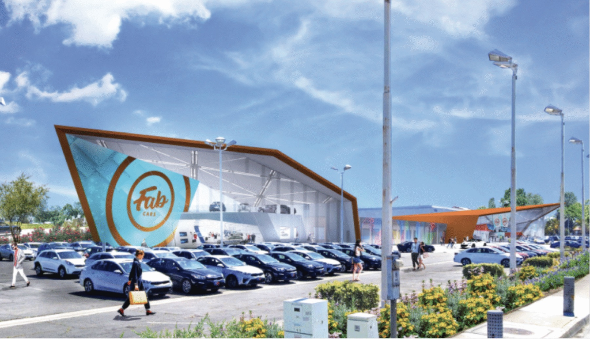
Case study · UX design · Web design · AR
USC Fabcars
An AR-powered web experience that reimagines the car dealership journey, letting buyers see the car they want inside their own home.
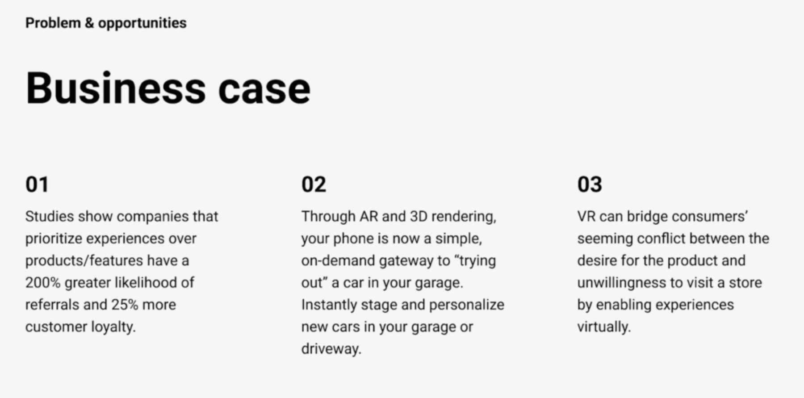
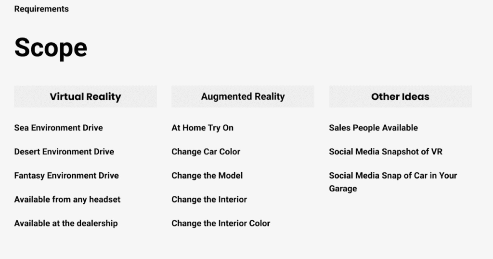
Section 1
Try the car at home
The AR app lets buyers see a car of interest inside their own home, making the journey more interactive and personal.
It modernised car buying and positioned Trophy Automotives as an innovative leader with a tech-savvy audience.
Section 2
A dealership for a younger buyer
Our team was asked to bring VR and AR into car sales.
Trophy Automotives commissioned 3D artists and UX designers to build an app and a virtual reality experience that would attract and engage buyers aged 18 to 30.
Section 3
Define, then ideate
- Define. With Trophy's stakeholders we set two goals: a VR experience that brings 18 to 30 year olds into the dealership, and an AR app to view a car at home.
- Ideate. 3D artists, UX designers and developers brainstormed ways to make AR and VR useful, memorable and shareable, then turned the best into early mockups.
Section 4
From mockup to try-at-home
Moving from first mockups to high-fidelity prototypes gave us a better conversation about where the AR app should go.
The app lets you place the car you like in your own garage and simulate trying it at home: a fun way to picture life with your new car.
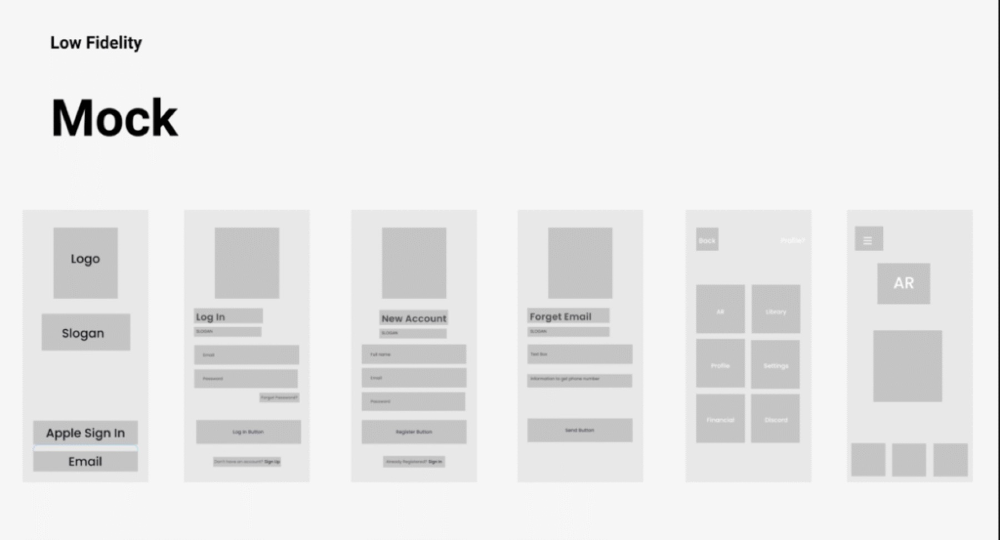
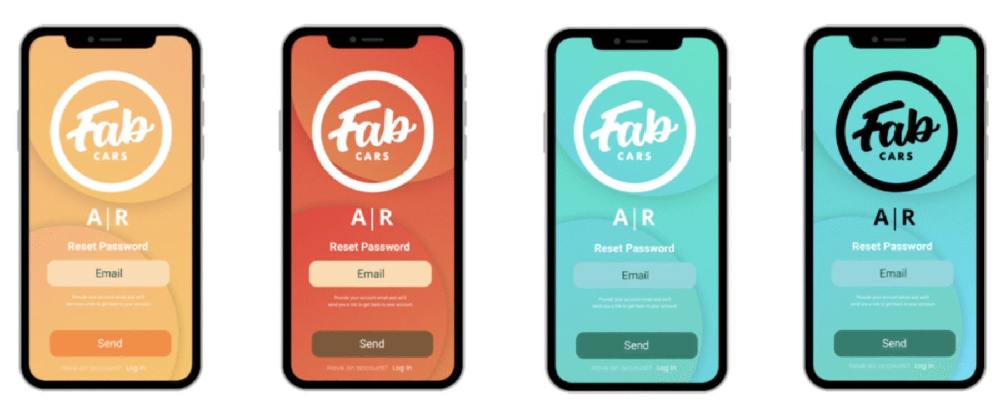
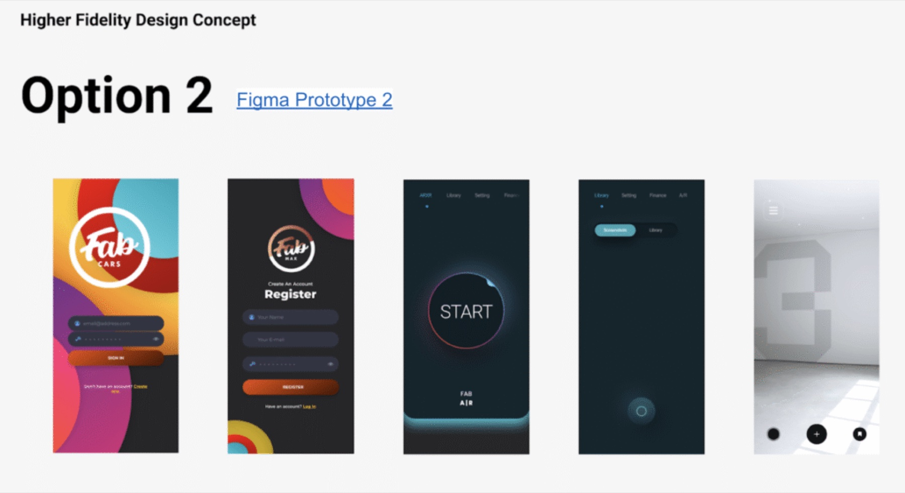
Section 5
Build in sprints, test with buyers
Agile iterations took the AR web app from prototype to a polished product, with real buyers testing it along the way.
- Implementation. Weekly syncs on environment modelling and UX, with high-fidelity prototypes guiding development and stakeholder talks.
- Testing. Usability tests with potential customers found the issues to fix, ending in an easy-to-use AR app that met the project's goals.
Section 6
Facility architecture
Renders of the dealership facility.
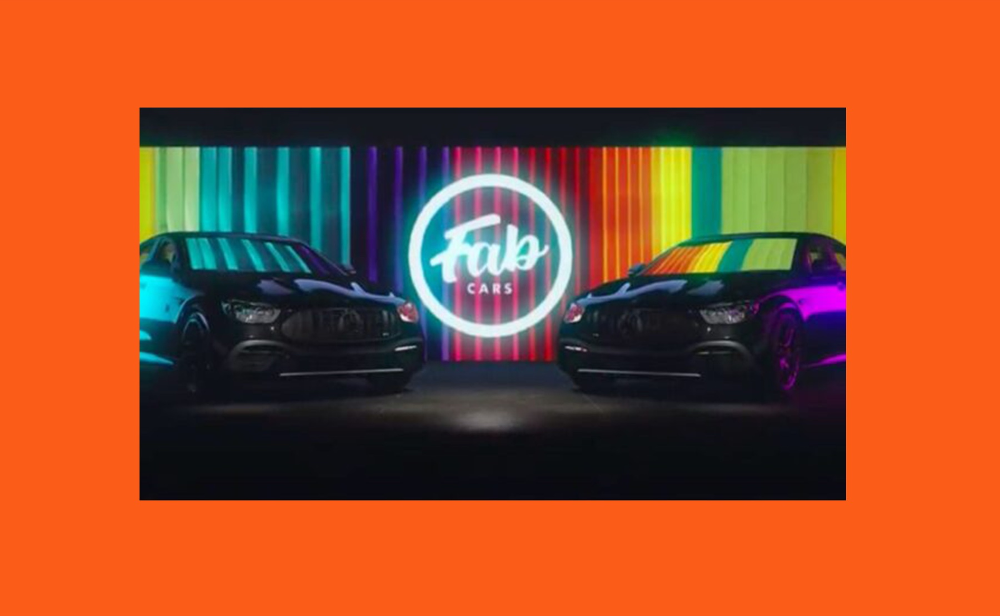
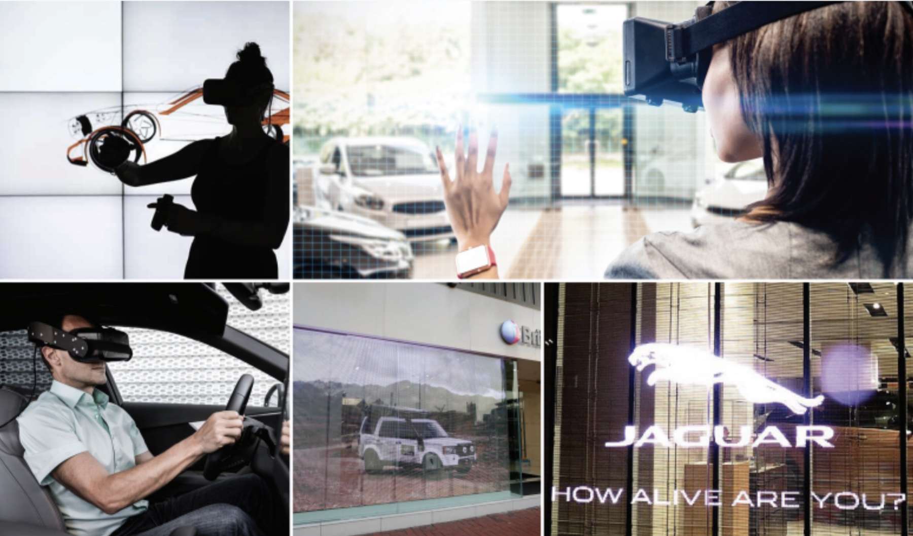
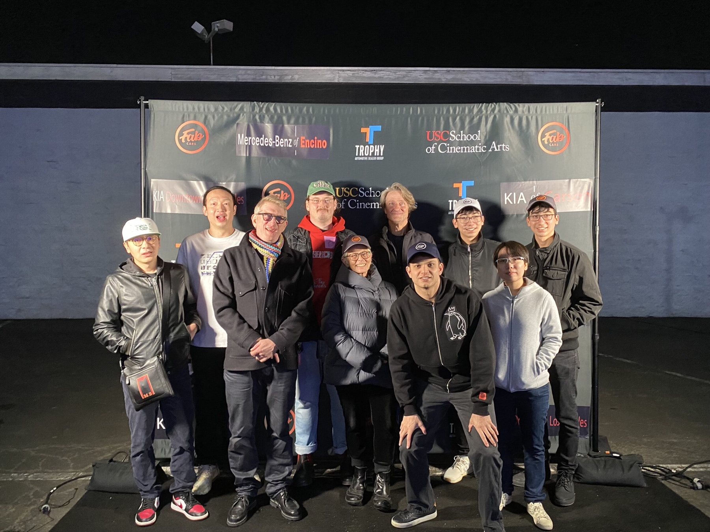
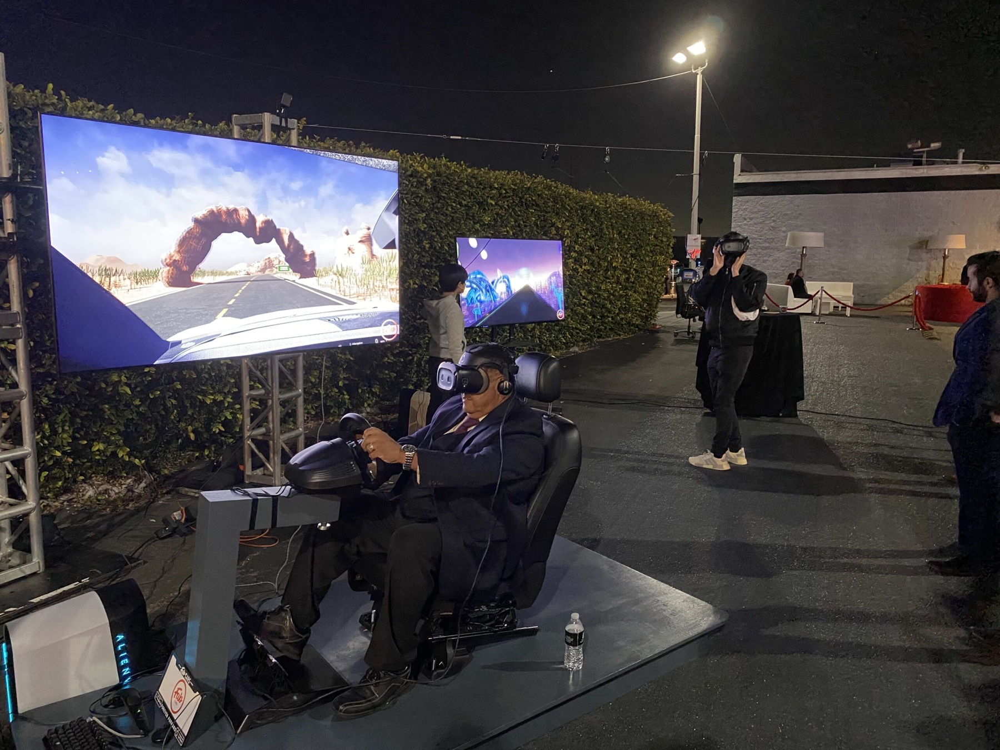
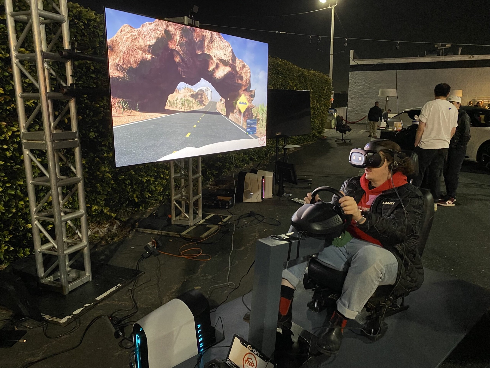
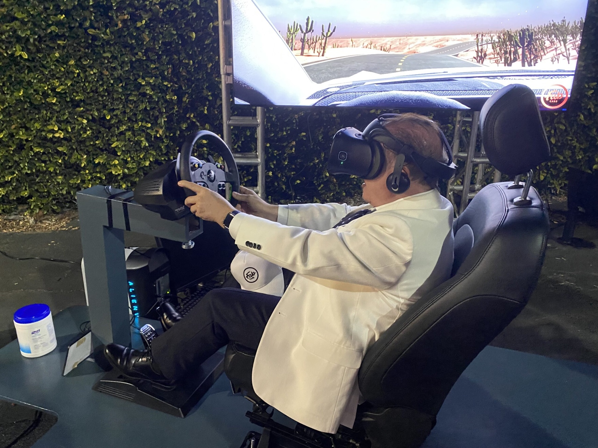